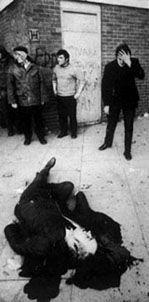
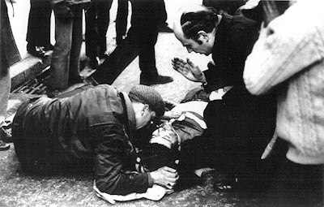
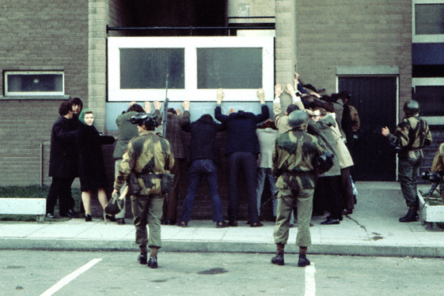
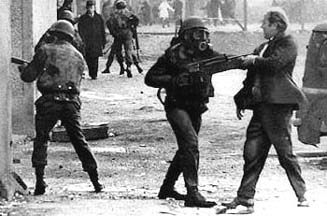
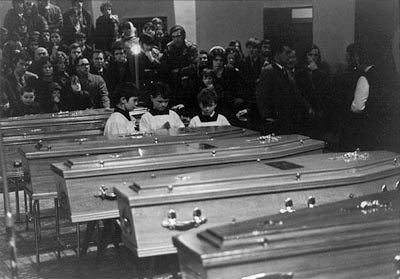

Everyone there remembers the bullets. Terrified civilians crouched and crawled spider-like, nostrils in the gutter, as bullets whizzed. Twenty-five years later, respected Irish churchman Edward Daly says he will not rest easy until victims of "Bloody Sunday" a bloodstained landmark in the troubled history of Northern Ireland, are exonerated. Thirteen Catholics were shot dead on the crisp, sunny afternoon of January 30, 1972. The gunmen were not guerrilla tearaways but members of Britain's crack Parachute Regiment sent to keep the peace. 
January 30, 1972 - Bloody Sunday English soldiers shot and killed 13 Irish demonstrators in Derry on Sunday, January 30, 1972. A fourteenth victim later died of his wounds.Bloody Sunday became one of the defining moments of the current "Troubles."
On January 30, 1972, soldiers from the British Army's 1st Parachute Regiment opened fire on unarmed and peaceful civilian demonstrators in the Bogside, Derry, Ireland, near the Rossville flats, killing 13 and wounding a number of others. One wounded man later died from illness attributed to that shooting. The march, which was called to protest internment, was "illegal" according to British government authorities. Internment without trial was introduced by the British government on August 9, 1971. The British-government-appointed Widgery Tribunal found soldiers were not guilty of shooting dead the 13 civilians in cold blood.
Bloody Sunday was a defining moment in the current era of conflict over British rule in Northern Ireland. Security analysts and politicians concede that it marked the end of a sort of phoney war and the start of all-out violence. Disaffected Catholic youths swelled the ranks of the Irish Republican Army (IRA) because of it and joined its hit-and-run campaign to drive Britain from Ireland. Whining, high-velocity bullets terrified the crowd of nationalists at a rally protesting at Britain's internment of several hundred Catholics opposed to rule from London.
 After 15 minutes, 13 lay dead at a makeshift street barricade under the shadow of a high apartment block, near rows of neat homes with net curtains and ornaments on the sills. Britain called in its Lord Chief Justice, Lord Widgery. Silver-haired, urbane, courteous and commanding, it was soon evident that he spoke a different language from the local Catholics, who saw themselves as fighting a civil rights struggle as just as that of U.S. blacks. Catholics were unanimous in calling the shooting unprovoked murder and ridiculed the army version that troops themselves had come under heavy gunfire.
Widgery exonerated the soldiers, saying some of the dead might have been armed before they were hit. He said troops came under fire when they tried to arrest rioters after clashes on the fringe of the rally.
Catholics say the Widgery Report was "a whitewash" which slandered unarmed people who were caught in a hail of army fire. Local doctor Raymond McClean treated two civilians who were wounded some 15 minutes before they were hit. He said troops came under fire when they tried to arrest rioters after clashes on the fringe of the rally. Catholics say the Widgery Report was "a whitewash" which slandered unarmed people who were caught in a hail of army fire. Local doctor Raymond McClean treated two civilians who were wounded some 15 minutes before the heaviest army firing began. One them died several months later and is regarded as the 14th victim of Bloody Sunday.
"What really made Bloody Sunday so obscene was the fact that people afterwards, at the highest level of British justice, justified it and I think that is the real obscenity."
Bishop Edward Daly, in an interview shown in Secret History:
Bloody Sunday broadcast by Channel 4 Television on 22 January 1992
None of the deceased or wounded is proved to have been shot whilst handling a firearm or bomb. Some are wholly acquitted of complicity in such action; but there is a strong suspicion that some others had been firing weapons or handling bombs in the course of the afternoon and that yet others had been closely supporting them. Lord Widgery, in the Summary of Conclusions in the Report of the inquiry into the events of 'Bloody Sunday?
Bloody Sunday, January 30, 1972, has seared Nationalist minds for a generation as proof that the system of government of Northern Ireland is unworkable and needs to be changed. Fourteen unarmed Catholic civilians were shot dead by British troops when a march organised by the Derry Civil Rights Association against the newly introduced policy of internment without trial turned into violent confrontation between Nationalists and the British state. Seven of them were under the age of 19.
Nationalists regard the shootings that took place along Rossville Street and William Street as a deliberate demonstration of British power to crush Irish resistance.
There are few people outside of Ireland today who can remember more about Bloody Sunday than the single fact that on January 30, 1972 the British army of Occupation shot and killed 13 civil rights marchers in Derrys Bogside district. But if Bloody Sunday is to be understood as well as remembered the details and the context are important. What follows covers the political events up to Bloody Sunday, the planning and the execution of the atrocity, as well as the press and government cover-up afterwards. No event in history can be understood unless we seek out the root cause and track the chain of events leading up to it. With Sharpesville, My Lai and other names associated with the slaughter of innocents, Bogside was to join a long list of massacres executed by a ruling elite incapable of granting the fundamental demands of a politically active population. The reason why our blood spattered our pavements and barricades on January 30, 1972 was because the nationalist minority within the Six-County statelet had been denied their basic human rights since the creation of Stormont in 1921, which in turn had its roots in the fact that our country had been subjected to eight hundred years of imperialist interference.
In August 1971 the Stormont junta introduced its most repressive of weapons internment without charge or trial. Internment had been used in the 20s, the 30s, the 40s, the 50s and phased out in the 60s and was adopted yet again in the 70s rather than concede the basic demands of the nationalist population.
Unlike more subtle regimes Stormont had not learnt the old methods do not always prove effective in new and changing situations. Immediately, on the introduction of internment, Stormont s prime minister Brian Faulkner declared a 12-month ban on all demonstrations. The majority of the leaders of the Northern Ireland Civil Rights Association (NICRA) showed a great reluctance to take to the streets and were thus rejected by the nationalist masses who created the Northern Resistance Movement (NRM) organised a whole array of protests, including a rent and rates strike which soon attracted the support of some 400, 000 households.
Internment had a unifying effect on the whole nationalist community. The first few weeks following August 9 showed that rather than end political dissent internment actually exacerbated the situation with 35 people having died as a result.
As reports of torture in the interrogation centres, jails, camps and on the prison ship Maidstone increased, the many-sided protest became even more determined and active. By the end of December a group of trade unionists from different parts of the Six Occupied Counties, in conjunction with the Peoples Democracy (a mainly student body), planned to defy the ban on public demonstrations. This combined vanguard led some 4,000 demonstrators on Christmas Day along the snow-drifted roads from Belfast to Long Kesh Concentration Camp, a journey of some ten miles. The British army had been outflanked and all their preparations to stop the march proved abortive. The marchers had managed to alert an unsuspecting world to the on-going torture. There was a sense of jubilation in the nationalist ghettos all over the Six Counties and the marching season had well and truly begun. British law had been flouted and made to look like an ass and the barricades remained intact, holding out the British Crown Forces and their bigoted RUC allies. Inside those barricades people set up their own co-ops, peoples taxis, newspapers, local government, policing, radio stations, an independent postal service as well as other civic essentials of popular administration.
The British military and political elite saw all those activities as an affront to established ideas of good order . On January 28, 1972 the British Cabinet s Defence and Overseas Committee met, subsequent to a meeting of the inner cabinet .

Both the Provisional and Official IRA instructed all units to dump arms so that there would be no incident on January 30 which might provide the British with an excuse to fire, especially when upwards of 30,000 people were expected to join the planned demonstration.
The winter of 1971-72 was the aftermath of the introduction of internment. To survive politically Faulkner had to do something drastic about the anti-internment cum anti-torture marches or be outflanked by his own right-wing William Craig, the Minister of Home Affairs who gave the order to attack on October 5, 1968, was stomping the countryside building up his Vanguard Movement at mass, often semi-fascist, rallies.
By January Paisleys Democratic Unionist Party (DUP) was threatening that unless "firm action was taken against Catholic lawlessness" his party too would begin to defy the law. The march called by the Civil Rights Association for Derry on January 30 heightened the sense of urgency for both Faulkner and the British cabinet.
Faulkner held talks with British army General Tuzo on January 26, the next day he flew to London for private talks with British prime minister Ted Heath. By January 28 he had a public commitment from the British army and the RUC that they would take action as yet unspecified against illegal marchers and on January 29 Paisley (after briefings ) called off the DUP s planned counter demonstration in Derry.

A smiling Paisley told journalists that he had received assurances that
"the Civil Rights march will be halted by force if necessary."
The chosen instrument was the First Battalion of the Parachute Regiment under the command of Colonel Derek Wilford. He was later to receive an OBE from England s Queen Elizabeth II for his work on that day. One of her sons, Prince Charles, the heir to the English throne, was appointed the Paras royal commander-in-chief.
The British army allowed the march to leave the working class Creggan Estate but prevented it from marching to the Guildhall Square by using stationary vehicles or positioning other smaller barricades in front of such. To avoid a confrontation the organisers diverted the Civil Rights march into Rossville Street with the intention of holding their mass meeting at Free Derry Corner, some 500 yards from the British barriers. While Bernadette Devlin (then a Mid Ulster MP), Lord Brockway and others prepared to address the meeting a small number of marchers stayed behind at the army barriers protesting against not being allowed to march on. Stones were thrown and the British army fired CS gas and brought up water cannon to disperse the crowd. Later TV film would show a deserted William Street, as their move-in order was carried out.
At 4.15pm that small crowd of stragglers were already on the move as they were forced to escape the discomfort of CS gas and the strong pressure-hoses of the water cannon. The majority were walking towards the mass meeting. Those to the rear began to flee as they observed the Paratroopers advancing from their previous positions at the old City Picture house on William Street. Within seconds 3 companies of the Parachute Regiment were sweeping along Chamberlain Street and into the High Flats complex at Rosville Street. Some came on foot while others were in armoured cars. They were hastily deployed into firing positions and almost immediately opened up on the unarmed crowd. The fleeing stragglers were heading towards the rally platform as sharp cracks, unlike the dull blast of the rubber or plastic bullet guns echoed all around them.
The British army version of events as given in an official statement in the House of Commons by the Minister of Defence could only be described as a tangle of lies. They claimed they opened fire after coming under attack from nail bombers and a "fusillade of fire of 50-80 shots from the area of Rossville and Glenfadda flats". No independent witness from among the scores of journalists and other observers who included many high-profile anti-Republicans eg columnists, SDLP officials and clergy accepted this contention. The latter category would have been only too delighted to drive a wedge between both wings of the IRA and the nationalist population they served if they had been offered even the slightest excuse to do so.
However the British army could not produce any bullet or bomb fragments and spent little time in such a search for they already knew that such did not exist anyway. The Brits endeavoured to claim that "in all cases soldiers fired aimed shots at men identified as gunmen and bombers". Forensic tests failed to link those killed with any weapons and needless to say no weapons were found on those killed, no charges were brought against those wounded.
The Brits said some of those shot were on their wanted list, this was later disproved. They claimed they shot three snipers in the High Flats but all the causalities were at ground level.
No definitive version of what happened can yet be written. Some people argue that the massacre was a result of a British army plan to draw out, either or both wings of the IRA and ambush them. Others say the British army went berserk though it is inconceivable that rigidly disciplined paratroopers would lose their heads at the sight of an unarmed crowd running away from them.
The British armys story has virtually no supporters outside the military establishment itself. But perhaps in the last analysis speculation is not necessary. One point stands out incontrovertibly. The Bogside massacre was consistent with the entire role of the British army since internment to terrorise and break the resistance of the minority community and to placate the growing strength of the loyalist far right.
After Bloody Sunday and protests from around the world the British government set up a Tribunal of Inquiry. Misnamed for it consisted of only one man, former army officer Lord Widgery. Although his report was a whitewash and full of contradictions it nevertheless contained some criticisms of the paratroopers. But the British public was never to hear these criticisms because of the way the Ministry of Defence handled the press and the way the press, almost without exception, played along.
After a peaceful Civil Rights March on January 30, 1972 from Creggan to Free Derry Corner units of the British army Parachute Regiment opened fire with automatic rifles and shot dead 13 unarmed civilians, injuring many more. It was later revealed that some days prior the soldiers had been briefed to "shoot- to-kill" at the march.
BLOODY SUNDAY AND AFTER
ARMY PLANS
MARCH STOPPED
TANGLE OF LIES
WHY?
COVER UP
13 DEAD IN DERRY

Bloody Sunday January 30, 1972